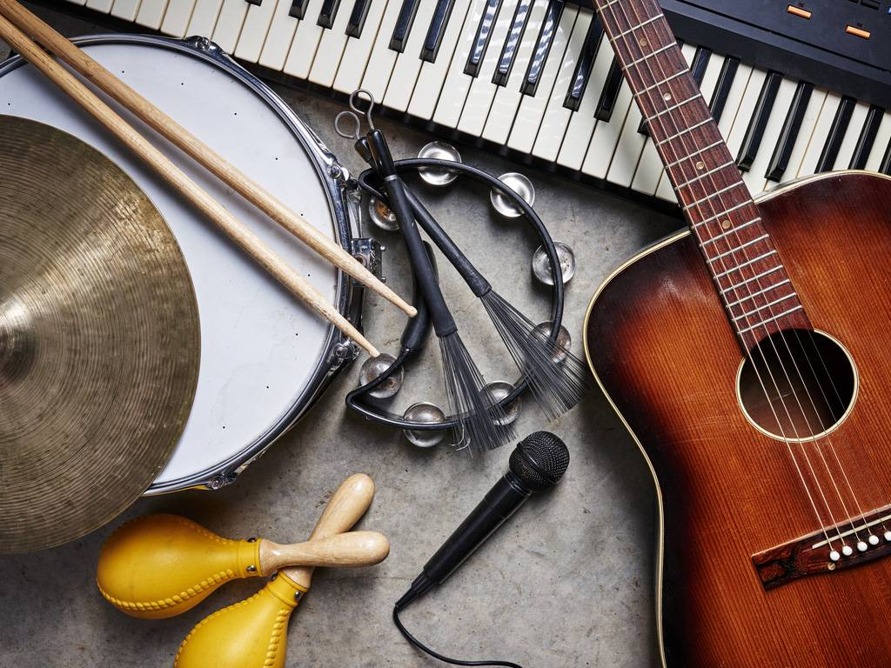
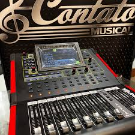

Meus projetos
A Alma da Música em Cada Nota
Transformo emoções em melodias originais para canções, trilhas e projetos criativos. Se você tem uma letra, ideia ou conceito, eu crio a melodia que dá vida à sua música. Vamos compor juntos?

Letras e Processos
Compartilho um pouco do processo criativo por trás das minhas composições. Cada canção tem uma história, e adoro transformar sentimentos em palavras.

Contato ou Parcerias
Estou aberta a parcerias, encomendas e colaborações musicais. Se você tem um projeto ou ideia, me chama!